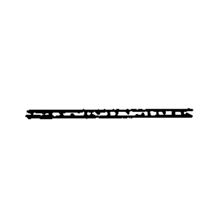
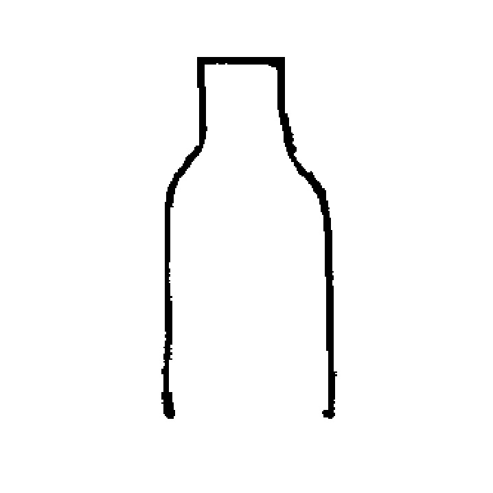

PROCESSES
Some dinoflagellates show processes or spines as ornamentation on the surface. There are many classifications about them, however, we will use two: Terminology proposed by Matsuoka, 2008 and Sarjeant, 1982.
Matsuoka, K., & Fukuyo, Y. A. S. U. W. O. (2000). Technical guide for modern dinoflagellate cyst study. WESTPAC-HAB, Japan Society for the Promotion of Science, Tokyo, Japan, 47. pp. 78.
Sarjeant, W. A. (1982). Dinoflagellate cyst terminology: a discussion and proposals. Canadian journal of botany, 60(6), 922-945. pp. 942.
TYPES OF PROCESSES (MATSUOKA, 2008)
|
Acuminate |
Bulbous |
 Evexate
Evexate |
 Capitate
Capitate |
Cylindrical |
Trifurcarte |
|
Orthogonal |
Vallate |
Oblate |
Conical |
Hystricate |
Antleriform |
|
Conical, striation at base |
Machicolate |
Patulate and evexate |
Capitate2 |
Cylindrical |
Conical |
|
Membranous |
Microreticulate |

Psilate |
Fibrous |
Scabrate |
TYPES OF PROCESSES (SARJEANT, 1982)
 Conical
Conical |
Subconical |
Tapering |
Cylindrical |
Infundibular |
Flared |
|
Tubiform |
Buccinate |

Lagenate |
Ipniate |
Bulbose |
Acicular |
|
Acuminate |
Evexate |
Bulbous |
Corynate |
Capitate |
Cauliflorate |
|
Bifid |
Foliate |
Oblate |
Digitate |
Branched |
Bifurcate |
|
Trifid |
Trifurcate |
Cruciferate |
Tetrafurcate |
Multifurcate |
 Ramifying
Ramifying |
|
Entire |
Perforate |
Fenestrate |
Fibrous |
Polytubular |
Denticulate |
|
Patulate |
Dirigate |
Recurved |
Orthogonal |
Aculeate |
Secate |
|
Scutellate |
Osculate |
Arboriform |
Licrate |
Clypeate |